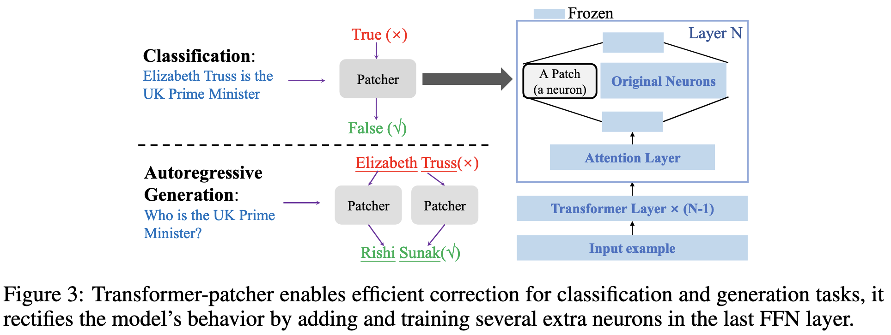

论文笔记 - Transformer-Patcher: One Mistake worth One Neuron
1. Information
Title: Transformer-Patcher: One Mistake worth One
Neuron
Link: T-Patcher Paper
Source: International Conference on Learning
Representations
Date: 2023.01.24
2. Summary
本文提出了一个名为 Transformer-Patcher 的方法，用于对基于 Transformer 的预训练语言模型 (PLMs) 进行连续的错误修正。该方法通过在 Transformer 模型的最后一层前馈网络 (FFN) 中添加少量可训练的神经元（称为“patches”），实现了对模型行为的高效修正。实验表明，Transformer-Patcher 能够在保持模型整体性能的同时，连续修正多达数千个错误，并且具有良好的泛化能力。该方法在顺序模型编辑 (Sequential Model Editing, SME) 任务中达到了最先进的性能。
3. Background
基于 Transformer 的预训练语言模型 (PLMs) 在自然语言处理 (NLP) 任务中取得了显著的成果，但仍然会偶尔产生错误输出。在工业环境中部署这些模型时，快速且稳健地修正这些错误对于提升用户体验至关重要。以往的研究主要关注单次模型编辑 (Model Editing, ME)，即修正单个错误。然而，实际应用中模型会不断出现新的错误，且同一错误可能多次出现。因此，本文将 ME 任务扩展到顺序模型编辑 (SME) 任务，旨在开发更实用的编辑方法。
4. Research Objective
本文的主要目标是提出一种能够连续修正模型错误的方法，以满足实际应用中不断出现错误的场景需求。具体而言，该方法需要满足以下三个属性：
- 可靠性 (Reliability)：修正后的模型能够针对特定输入给出期望的输出。
- 泛化性 (Generality)：修正后的模型能够泛化到等价的输入（例如语义相似的句子）。
- 局部性 (Locality)：修正仅影响特定错误，不影响模型在其他无关输入上的表现。
5. Method
5.1 Transformer-Patcher 架构
Transformer-Patcher 的核心思想是在 Transformer 模型的最后一层 FFN 中添加少量可训练的神经元 (patches)。这些patches 仅在遇到特定错误输入时被激活，从而修正模型的输出。具体来说，对于分类任务，添加一个 patch 即可修正模型；对于自回归生成任务，根据错误生成的 token 数量添加相应数量的 patches。
5.2 Patch 的定义与训练

Patch 的定义： Patch 可以被视为 FFN 层中的一个额外的键值对 (key-value pair)。给定一个查询向量 \(q\)，标准 FFN 的输出为： \[ a=\operatorname{Act}\left(q \cdot K+b_k\right) \]
\[ \operatorname{FFN}(q)=a \cdot V+b_v \]
其中，Act 是非线性激活函数（如 ReLU 或 GeLU），\(a\) 是激活值向量，\(b_k\) 和 \(b_v\) 是偏置向量。添加一个 patch 后，新的输出为： \[ \left[\begin{array}{ll} a, a_p \end{array}\right]=\operatorname{Act}\left(q \cdot \left[\begin{array}{ll} K, \left.\left.k_p\right]+\left[b_k, b_p\right]\right) \end{array}\right.\right. \] 其中，\(k_p\) 是 patch 的键，\(v_p\) 是 patch 的值，\(b_p\) 是 patch 的偏置，\(a_p\) 是 patch 的激活值。通过上述公式，patch 的输出可以表示为： \[ \operatorname{FFN}_p(q)=\operatorname{FFN}(q)+a_p \cdot v_p \]
训练 Patch： 为了训练 patch，作者提出了三种损失函数：
激活损失（Activation Loss）： 为了确保 patch 在遇到错误输入时被激活，定义激活损失为： \[ l_a=\exp \left(-q_e \cdot k_p-b_p\right) \] 其中，\(q_e\) 是错误输入的查询向量。该损失函数的目标是最大化 patch 的激活值。
编辑损失（Edit Loss）： 编辑损失使用任务的原始损失函数，确保修正后的模型输出与目标输出一致： \[ l_e=L\left(y_e, p_e\right) \] 其中，\(L(\cdot)\) 是任务的损失函数，\(y_e\) 是目标输出，\(p_e\) 是修正后模型的输出。
记忆损失（Memory Loss）：
为了确保 patch 仅对特定错误输入响应，而不影响不相关的输入，需要满足： \[ \forall i \in \mathbb{I}_{x_e}, \boldsymbol{q}_i \cdot \boldsymbol{k}_p+b_p \leq \beta \rightarrow \max _i\left(\boldsymbol{q}_i \cdot \boldsymbol{k}_p+b_p\right) \leq \beta \] 由此定义记忆损失为： \[ l_m=l_{m 1}+l_{m 2} \] 其中，\(l_{m 1}\) 用于确保 patch 对记忆中的查询向量不激活。记忆损失 \(l_{m 1}\) 通过限制 patch 对之前见过的样本（记忆）的激活值，确保 patch 不会对这些无关的输入产生响应，从而保证模型在修正特定错误时不会影响其他已学习的内容。： \[ l_{m 1}=\mathrm{S}\left(M \cdot k_p+b_p-\beta ; k\right) \] \(l_{m 2}\) 用于进一步强化 patch 对错误输入的专一性。它通过确保 patch 对错误输入的激活值大于对记忆中查询向量的激活值，进一步拉开激活值的差距，使得 patch 能够更准确地识别和响应特定的错误输入： \[ l_{m 2}=\mathrm{S}\left(\left(M-q_e\right) \cdot k_p+b_p-\gamma ; k\right) \] 其中，\(M\) 是从之前见过的样本中随机保留的查询向量矩阵，\(\beta\) 和 \(\gamma\) 是超参数，用于控制激活值的阈值，\(S\) 函数接收一个向量 v 和一个整数 \(k\)，输出一个标量,具体定义为： \[ S(\mathbf{v} ; k)=\operatorname{Avg}[\operatorname{TopK}(\exp (\mathbf{v}) ; k)] \]
最终的 patch 训练损失为： \[ l_p=l_e+\alpha l_a+\mu l_m \] 其中，\(\alpha\) 和 \(\mu\) 是超参数，用于平衡不同损失函数的权重。
6. Conclusion
本文提出了顺序模型编辑 (SME) 任务，并设计了 Transformer-Patcher 方法来高效地修正 Transformer 模型中的错误。该方法通过在模型的最后一层 FFN 中添加少量可训练的神经元 (patches)，实现了对模型行为的快速修正。实验结果表明，Transformer-Patcher 能够在连续修正多达数千个错误的同时，保持模型的整体性能，并且具有良好的泛化能力。该方法为实际应用中快速修正模型错误提供了一种有效的解决方案。
7. Notes
7.1 每次模型编辑增加一个神经元还是多个？
Transformer-Patcher 的设计允许在每次编辑中添加多个神经元补丁，具体数量取决于任务类型和模型错误的复杂性。
1. 分类任务 (Classification Tasks)
对于分类任务，一般情况下每次编辑只添加一个神经元补丁：
- 每次编辑用于修正单个错误（一个错误输入 \(x_e\)）。
- 补丁由一个键值对 \((k_p, v_p)\) 和偏置 \(b_p\) 组成，用于在目标输入 \(q_e\) 上激活并修正模型行为。
这种方式足够解决分类任务中的单个误分类问题。
2. 生成任务 (Autoregressive Generation Tasks)
在生成任务中，模型可能会在多个位置生成错误的输出，因此需要为每个错误生成一个独立的补丁：
- 每个错误对应一个查询 \(q_e\)，因此需要为每个错误添加一个补丁。
- 如果一个输入序列中有 \(n\) 个错误，则需要添加 \(n\) 个补丁。
7.2 每次模型编辑是否都要进行训练？
根据 Transformer-Patcher 的机制，每进行一次模型编辑（修正一个错误），都需要对新增的补丁进行训练。然而，这种训练只需优化补丁参数（如 \(k_p\)、\(v_p\)、\(b_p\)），而不影响原始模型参数，因此训练过程非常高效。
每次编辑的核心步骤：
- 新增补丁：为每次编辑新增一个神经元补丁，该补丁只与特定错误相关联。
- 训练补丁：新增补丁的参数需要训练，以确保该补丁能修正目标错误，同时不影响其他输入的预测能力。
是否需要重新训练整个模型？
不需要重新训练整个模型，只需训练新增补丁的参数。这种方式避免了大规模模型重训练，显著降低了计算成本。实验中显示，每次训练补丁的耗时：
- FEVER 数据集：每次编辑耗时约 7.1 秒。
- zsRE 数据集：每次编辑耗时约 18.9 秒。
7.3 编辑时训练数据如何构建？
训练补丁需要以下几类数据，以满足论文提出的三个关键特性（可靠性、通用性和局部性）：
(1) 编辑样本 (Edit Example)
用于修正错误的核心样本，表示为 \((x_e, y_e)\)，其中：
- \(x_e\)：输入数据（模型预测错误的输入）。
- \(y_e\)：目标输出（正确的标签或目标预测）。
作用：确保补丁能够修正该错误（满足可靠性）。 训练损失： \[ l_e=L\left(y_e, p_e\right) \] 其中，\(L\) 是任务的原始损失函数（如交叉熵损失）。
(2) 等价样本 (Equivalent Examples)
\(x_e\) 的等价变体（如输入重述、同义表述），这些样本的目标输出与 \(y_e\) 一致。
- 生成方法：可以通过数据增强方法生成等价样本，例如反向翻译 (back-translation)。
作用：提高补丁的通用性，确保补丁不仅能修正 \(x_e\)，也能修正等价输入。
(3) 无关样本 (Irrelevant Examples)
这些样本与目标错误无关，目标是保证补丁不会对这些样本产生不必要的影响。
- 来源：随机从模型的训练集 \(D_{\text {train }}^{\prime}\) 或测试集 \(D_{\text {test }}\) 中选取。
- 为了减少计算开销，论文中保留了一部分历史样本的特征表示（记忆向量）。
作用：避免补丁对无关样本激活（满足局部性）。 训练损失： \[ l_{m 1}=S\left(M \cdot k_p+b_p-\beta ; k\right) \]